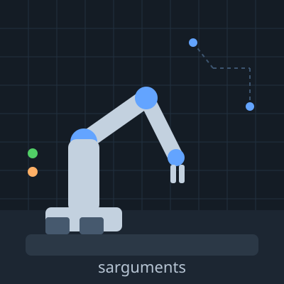

GitHub 저장소 목록이 여기에 표시됩니다.
안녕하세요, sarguments입니다.
외부 라이브러리 없이 HTML·CSS·JS만으로 만드는 포트폴리오입니다.
기록하고 다시 재현하는 걸 좋아합니다.
지금은 B1-1 미션 진행 중입니다.

기술
- HTML — 시맨틱 구조
- CSS — 반응형·다크모드
- JavaScript — 상태와 렌더링
- Git·GitHub — 기록과 배포
외부 라이브러리 없이 HTML·CSS·JS만으로 만드는 포트폴리오입니다.
지금은 B1-1 미션 진행 중입니다.

GitHub 저장소 목록이 여기에 표시됩니다.